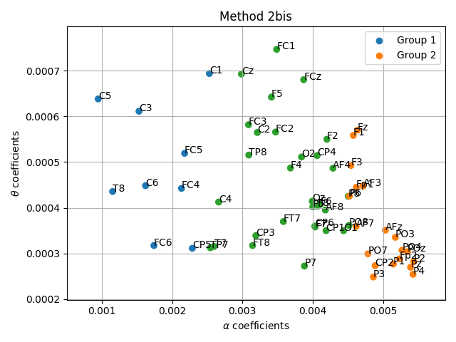
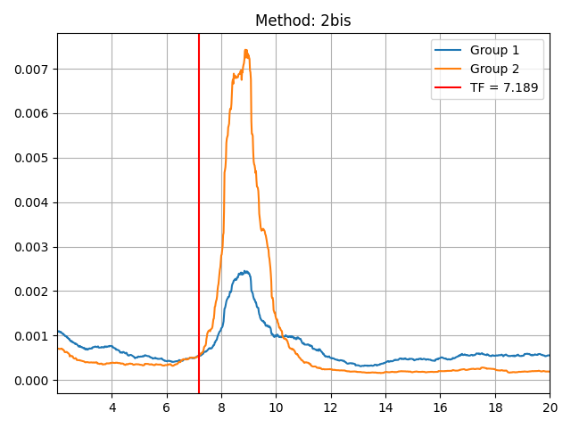

Note
Click here to download the full example code
Title of the example¶
Short description
- 
- 
Out:
Opening raw data file ../sub-001/ses-01/eeg/sub-001_ses-01_task-eyeclose_raw.fif...
Range : 0 ... 29558 = 0.000 ... 59.116 secs
Ready.
Using multitaper spectrum estimation with 57 DPSS windows
import mne
from transfreq import functions
import os.path as op
import numpy as np
subj = '001'
ses = '01'
# define file paths
f_name = op.join('..', 'sub-'+subj,'ses-'+ses,'eeg','sub-'+subj+'_ses-'+ses+'_task-eyeclose_raw.fif')
# load data
raw = mne.io.read_raw_fif(f_name)
raw = raw.pick_types(eeg = True, exclude=raw.info['bads']+['TP9','TP10','FT9','FT10'])
# define good channels
tmp_idx = mne.pick_types(raw.info, eeg=True, exclude='bads')
ch_names = [raw.ch_names[ch_idx] for ch_idx in tmp_idx]
# define time range
tmin=0
tmax=raw.times[-1]
# compute psds
n_fft = 512*2
bandwidth = 1
fmin = 2
fmax = 30
sfreq = raw.info['sfreq']
n_per_seg = int(sfreq*2)
psds, freqs = mne.time_frequency.psd_multitaper(raw, fmin=fmin, fmax=fmax,tmin=tmin, tmax=tmax,bandwidth=bandwidth, adaptive=False,
low_bias=True, normalization='length', picks=ch_names, proj=False, n_jobs=1, verbose=None)
# normalize psds (not necessary because all the implemented functions do normalize psds)
psds = psds/psds.sum(axis=1).reshape((psds.shape[0],1))
# define channel positions
ch_locs = np.zeros((len(ch_names),3))
for ii in range(len(ch_names)):
ch_locs[ii,:] = raw.info['chs'][ii]['loc'][:3]
# compute TFbox automatically
TFbox = functions.computeTF_auto(psds, freqs, ch_names, alpha_range = None, theta_range = None, method = '2bis', iterative=True)
# plot clustering
functions.plot_clustering(TFbox, method = None)
# plot channels on head surface
functions.plot_chs(TFbox, ch_locs, method = None)
# plot transition frequency
functions.plot_TF(psds, freqs, TFbox)
Total running time of the script: ( 0 minutes 21.051 seconds)